Project Detail プロジェクト詳細
PixelNotes Website & Logo
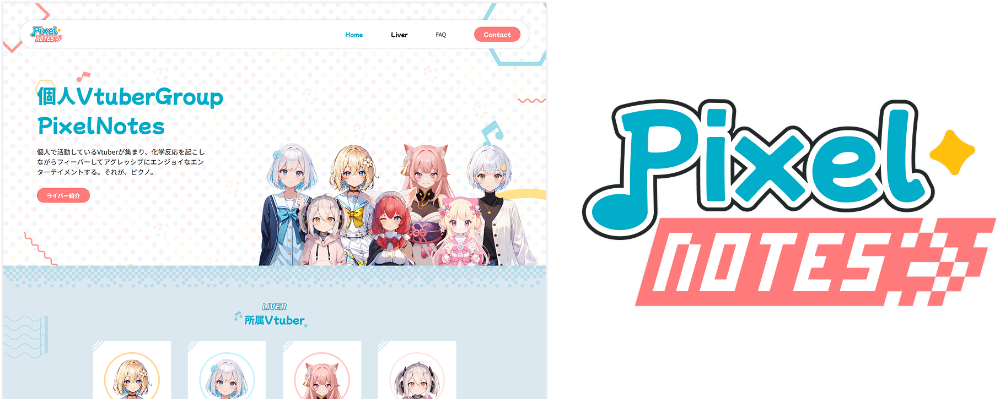
Overview 概要
PixelNotes is a Japanese Virtual YouTuber (VTuber) group whose members livestream gameplay on YouTube.
What is a VTuber? A VTuber is not too different from a YouTuber—both create video content for a wide range of purposes. What sets VTubers apart is their use of virtual avatars, most commonly styled like anime characters, and their tendency to act in character based on the avatar’s appearance and backstory. Typically, VTubers produce content related to video games and other adjacent forms of entertainment, such as music or real-time chats with their audience.
As you may have guessed after seeing my about page, I am currently learning Japanese. One of the ways that I learn Japanese is through watching Japanese livestreams. I enjoy gaming content, and I want to practice my listening skills, so this form of entertainment is the best of both worlds for me.
PixelNotes is one of the many VTuber groups and agencies in Japan that produces VTuber talents. Initially, they did not have a homepage or an official logo. This prompted me to offer my services as a designer to create both their website and logo for them as a side project. This side project also gave me the chance to use Japanese to communicate in a work setting, which I found very valuable.
Purpose of the Website サイトの目的
Through a discussion with the company’s producer (person in charge of branding and producing their talents), I learned that the website’s main goal was to provide information about their talents for fans—such as character lore, birthdays, fan marks, and other details. Typically, most VTuber websites also serve a second purpose: recruiting new members to join as talents. However, for PixelNotes, this was not necessary.
I proposed 3 types of pages for the website to align with this goal:
- Home page – An introduction to PixelNotes and its members
- Members page – A list of all group members, ordered by their joining date
- Member profile page – A detailed view showing each member's character art and profile information
Design Style デザインスタイル
In the discussion, I also asked the producer what kind of message they would like to convey to their fans. This was important to come up with the design style that would properly convey that message.
シンプルでカラフルなのがいいな～
ピクセルノーツなのでちょっとピクセルアートっぽいのとかがいいですね！
音符とピクセルアートで楽しそうな雰囲気をイメージしてます！
Based on what the producer said, a design style that is simple and colourful would be ideal. As the group's name is PixelNotes, having some pixel art and musical notes in the design would also help to create a fun atmosphere, complementing the PixelNotes’s objective to entertain viewers through entertaining content.
Design Elements デザインエレメント
With the initial discussion in mind, I came up with some elements to be included in the design:
Motifs
These motifs were chosen to symbolize playfulness and fun, complementing the existing themes of musical notes and pixel art suggested by the producer.
- Music notes
- Pixel art
- Abstract shapes
- Polka dots
Colours
The first thing that came to mind when the producer mentioned the word 'colorful' was a rainbow. I aimed to incorporate as many colors as possible without making the visuals feel too busy. After several rounds of experimentation, I realized that pastel colors were the best fit—they weren’t too saturated and struck just the right balance.
Using the three primary colors also helped introduce character-specific colors for each group member later on, ensuring they felt cohesive and not out of place.
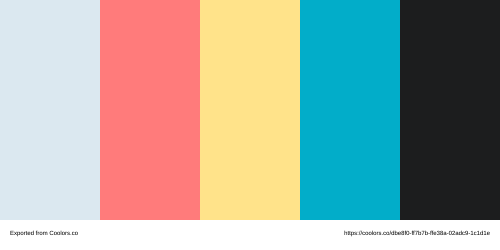
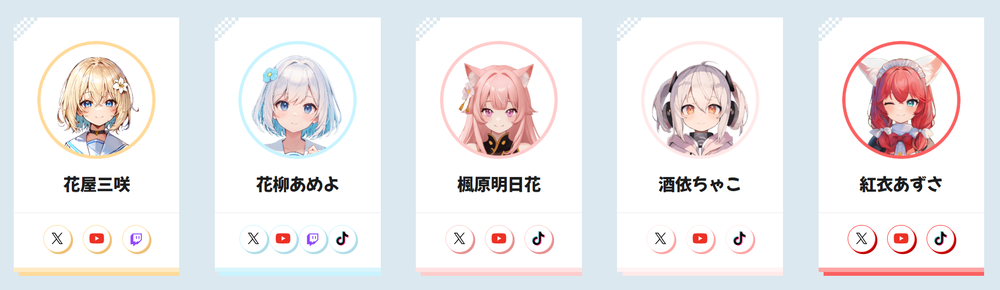
Patterns
After picking the motifs and colours, I then created two different patterns that were used throughout the website as decorative elements.
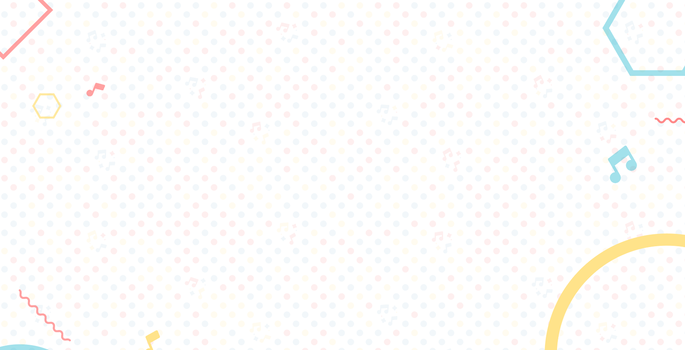
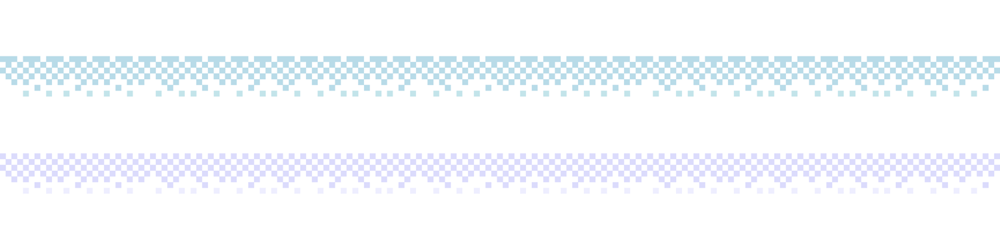
Fonts
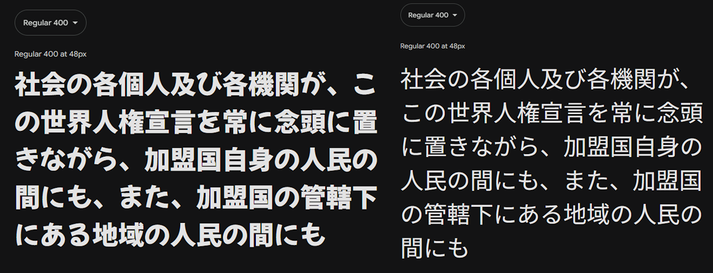
Mochiy Pop One and Noto Sans Japanese were used in the design. The former, with its rounded style for the Hiragana characters, was used for titles to convey a fun atmosphere, while the latter provided contrast as the body text font.
Home Page ホームページ
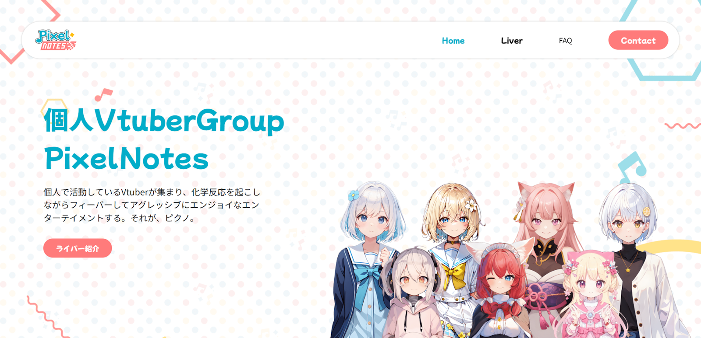
The header section features a short introduction to PixelNotes and a portrait of all current members. A call-to-action that scrolls to the "Liver" section is also introduced. Here, the background pattern is used.
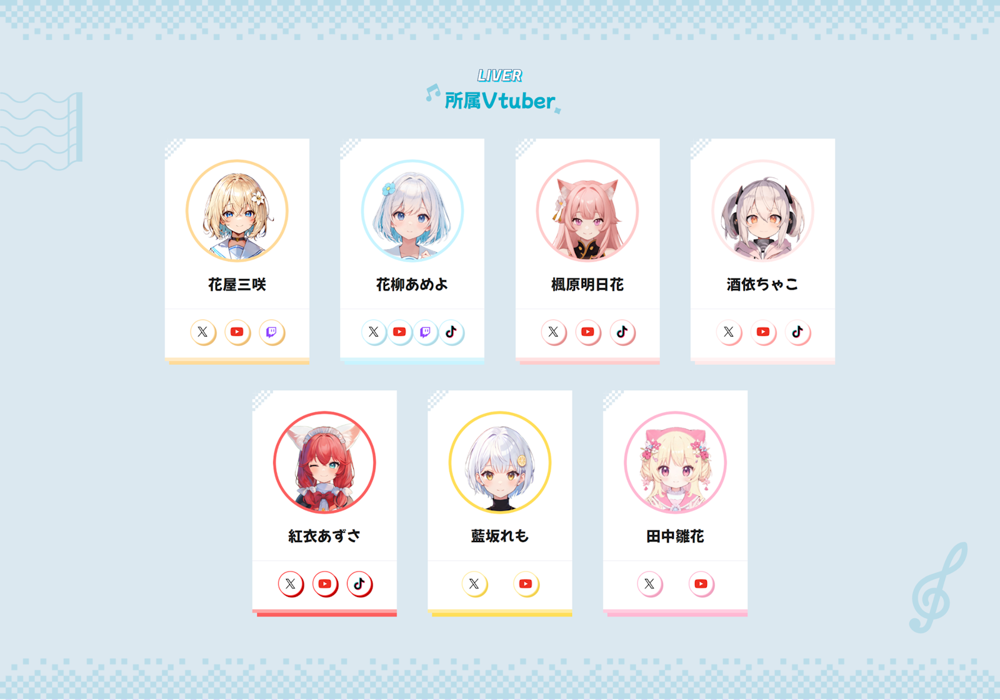
The 'Liver' section lists the livestreamers (members) who belong to the group and their social media links. The pixel border shown earlier is used as decorative border around this section, and the about section.
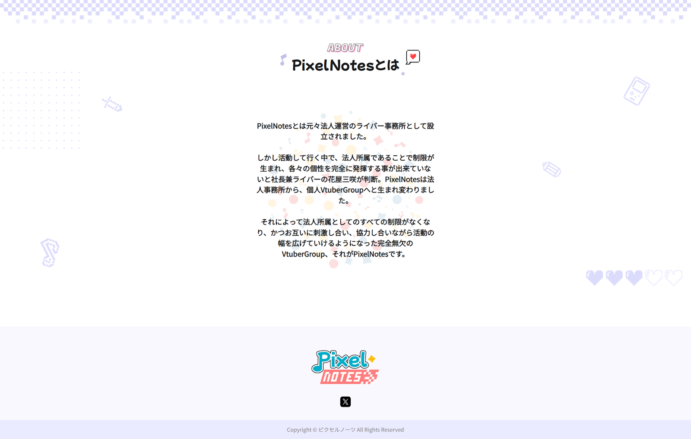
The bottom portion has a longer about section, detailing the formation and history of the group. Some pixel art icons were also used as decorative background.
Members Page ライバーページ
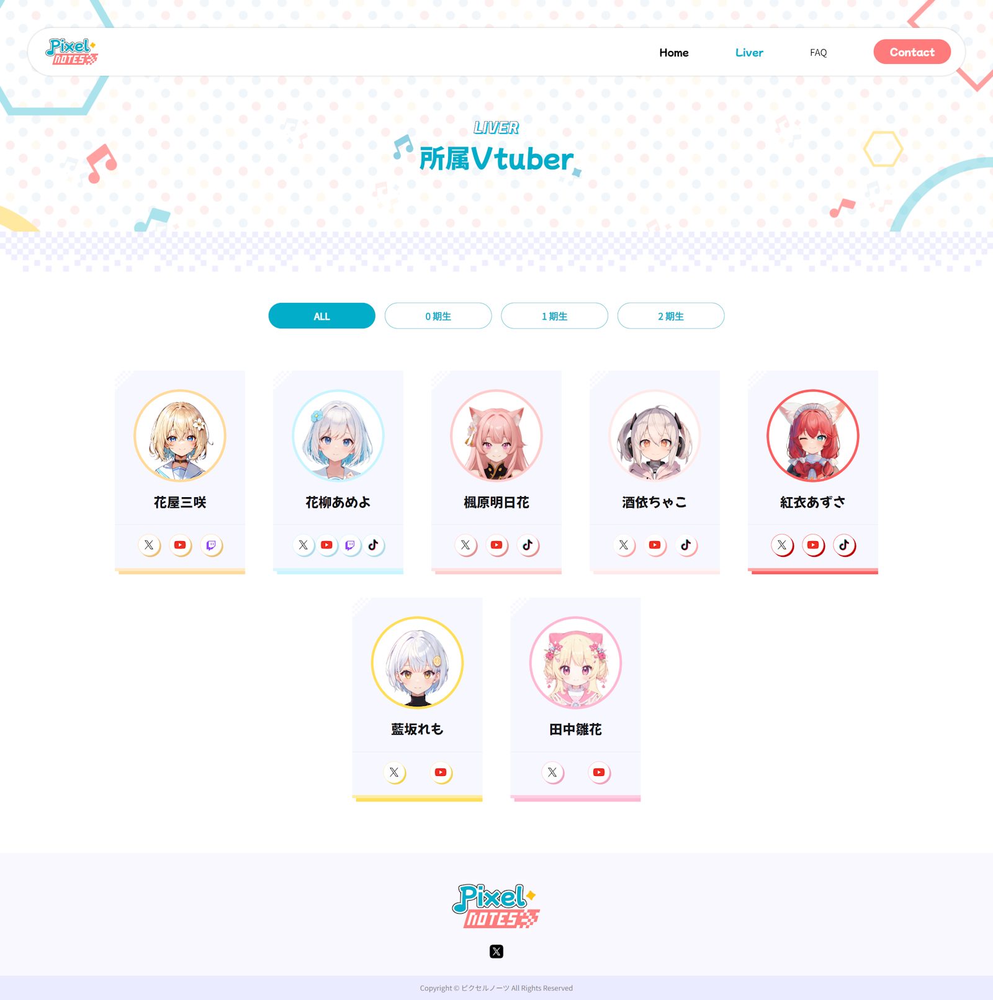
The Members page includes a filter feature based on 'generation,' which roughly refers to the batch or seniority of each member.
Profile Page プロフィールページ
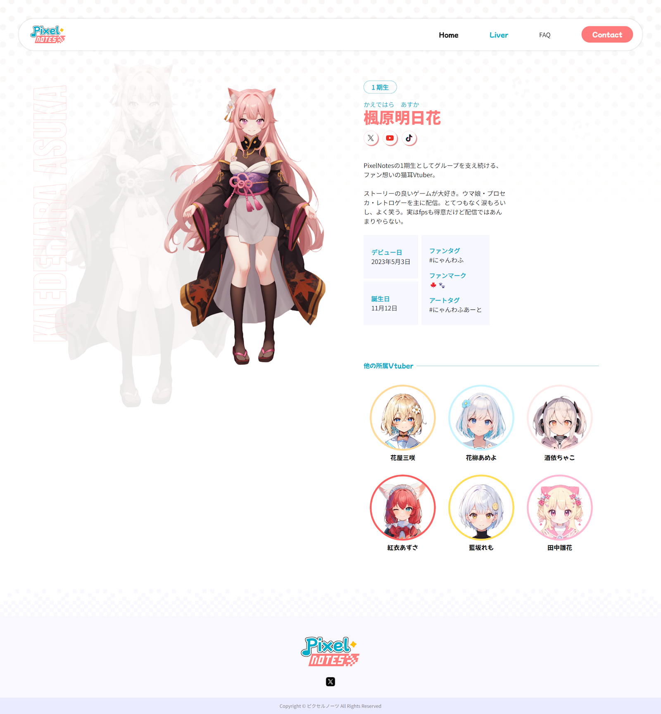
The profile page includes a short introduction by a particular member, as well as information such as their social media links, debut date, birthday, and streaming and fan art tags.
Logo Design ロゴデザイン
The logo design followed the same concept of creating a fun atmosphere. I started by exploring a few options for the design, with each emphasizing design aspects such as shapes and themes.
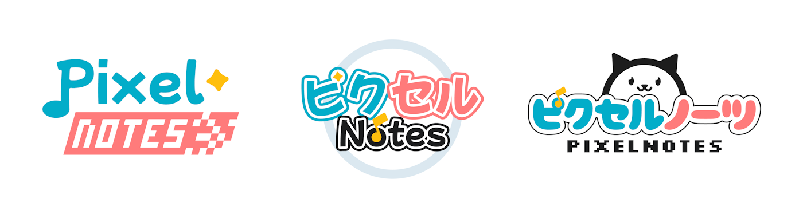
The first logo incorporates musical notes into the tail of the first "p" character, with a racing themed flag element for the word "notes" to symbolize the competitive nature of gaming. The yellow star represents the concept of VTubers also being idols, in other words stars in nature, as some of them are expected to perform and sing in certain circumstances.
The second logo uses more colours and icons, emphasizing playfulness. Elements in this logo are very rounded and informal to create a fun and soft atmosphere. It uses a mix of Japanese and English words for contrast. Star and musical note icons are used as decorative elements for this design.
The third design features a mascot character in the logo, which can be interpreted as either a dog or a cat. Many members of PixelNotes have animal ears, and most of them have pets, so this mascot is created as a representation of that. This time, the word "PixelNotes" is shown twice, once in English and once in Japanese. The fonts were chosen to contrast each other, whereby the Japanese font is very rounded, a stark contrast to the pixelated font of the English version of the word.
Design Iteration デザインイテレーション
After showing the 3 designs to the producer, the first design was selected, and so I created more iterations to see what alternatives there are for this logo. I tried playing around with size, colour, texture, patterns, and positioning.
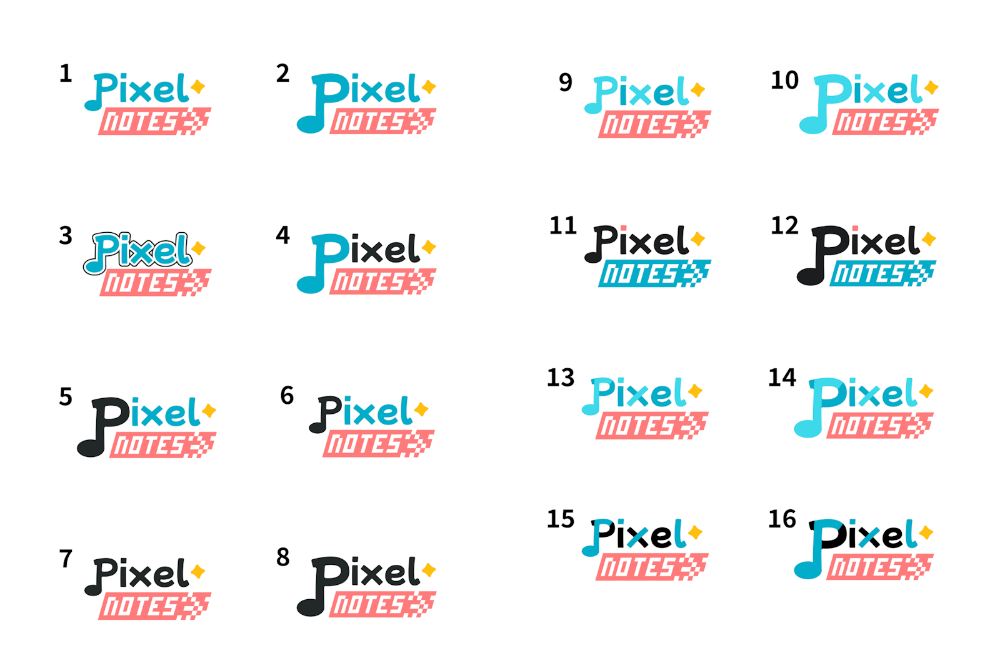
In the end, the 3rd version was selected as the final logo.
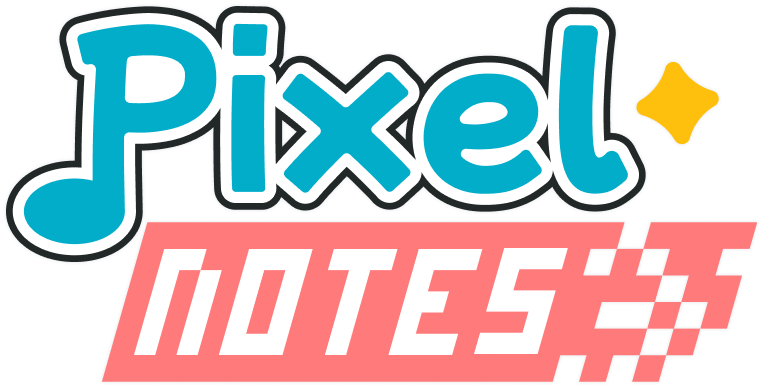
Learnings 学んだこと
Overall, this was a really fun side project where I not only got to practice my designing skills, but also my Japanese language skills. This also taught me the importance of communicating through design as there was some language barrier due to my level of Japanese.
I hope to be able to do similar projects in the future where I get to combine both my hobby and skills together to produce a meaningful digital product.